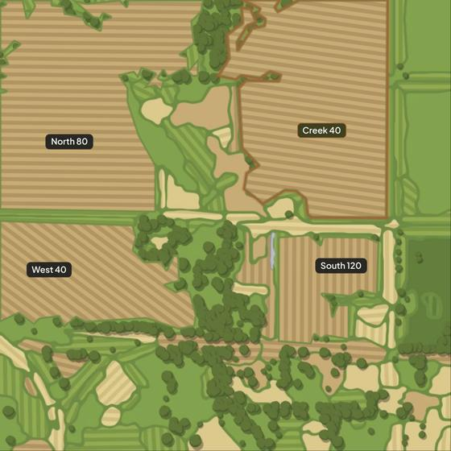
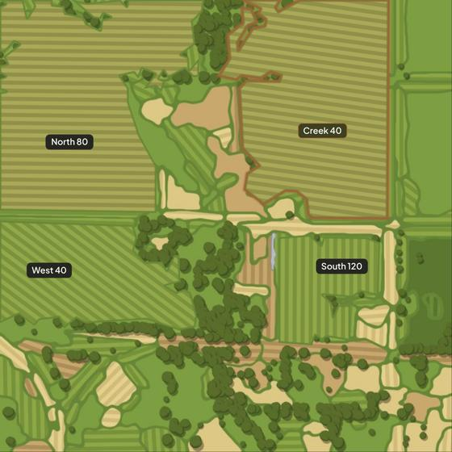
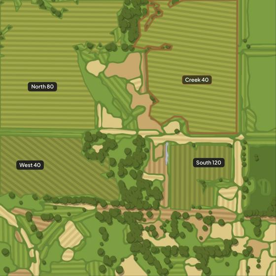
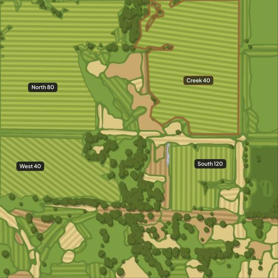
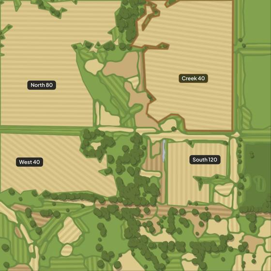
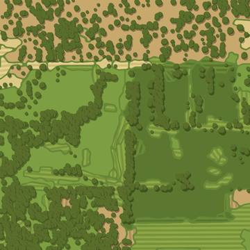
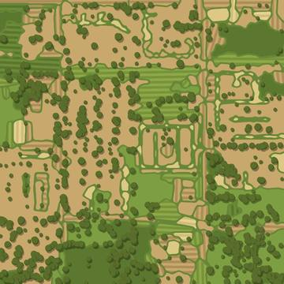
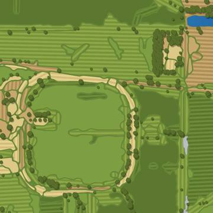
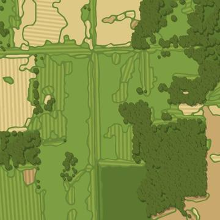
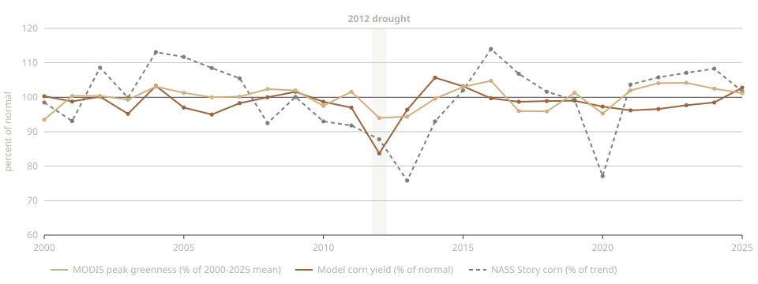

Step 1
Bring your real field
Drop in your field boundaries (GeoJSON or KML from Google Earth, John Deere or FieldView). EcoShift measures each field's acres, slope and soil, and pulls 44 seasons of Copernicus weather for that exact spot.
Bring your real field. EcoShift reads it with NASA and Copernicus satellites, replays 44 seasons of weather on it and shows which crop plan holds up.
What EcoShift is
A farm planner that watches your field from orbit and tests next season before you plant it. A farmer brings their field boundaries, EcoShift checks how the field is doing today, then runs every crop plan through 44 real seasons of weather, in bushels and in dollars.
Step 1
Drop in your field boundaries (GeoJSON or KML from Google Earth, John Deere or FieldView). EcoShift measures each field's acres, slope and soil, and pulls 44 seasons of Copernicus weather for that exact spot.
Step 2
Sentinel-2 satellite images, refreshed every few days, score each field's canopy, nitrogen, water and evenness. EcoShift flags ponds, wet spots, burned ground and weak zones, and points to where they are.
Step 3
Corn, soybeans, a rye cover crop or oats: each plan runs through 44 real seasons, 1982 to 2025. The farmer sees the good years, the bad years and the advice, then asks the chat anything.
At a glance
44
Real seasons of daily weather replayed on every field, from NASA POWER and Copernicus ERA5.
10 m
Sentinel-2 detail: each field is read pixel by pixel, not as one county average.
15 min
How often the live view checks weather, soil moisture and air again while it is open.
A rotation is a bet placed years ahead, and the weather keeps changing the odds. EcoShift lets a farmer try the bet first, on their own field, with the planet's best Earth observation behind them.
Our next step is multi-sensor satellite fusion. Sentinel-1 radar sees through clouds, Sentinel-2 reads the crop, and Sentinel-3 tracks land temperature. Fused in near-real time with weather, climate and field inspections, they will train machine-learning models that forecast crop condition and yield for any field boundary, any crop and any season.
The project
How it works, the data behind it and how well it holds up. Real fields from a file, the satellites and their indices, the crop model, the AI helpers, the checks against real harvests and the honest limits.
Project details
Real fields, the satellites, the crop model, the AI helpers and how well it all holds up, in detail.
From a photo to a living farm
The farm you see is drawn from a real aerial photo. The team's converter turns a USDA photo into a flat illustrated map: fields, crop rows, trees, roads and water. EcoShift finds the four fields on it, then paints 44 seasons of NASA weather onto them, week by week.

Drag the divider, or use the left and right arrow keys. On the left is the real photo. On the right is the map the converter draws from it.
The example farm is in Story County, Iowa, 1.6 km on a side. Photo: USDA NAIP via USGS, public domain. Map: drawn by the team's converter.
The same farm through one growing season, as the simulation paints it. Crops grow, turn gold and are harvested. Dry spells, waterlogging, frost and heat show on the fields.






Frames are captured from the simulator's farm view for the example farm in a typical year (2011 weather).
Each is a ready starting farm with its own 44 seasons of NASA weather, USDA soils and county harvests. Pick one to open it in the simulator; a farmer's own address starts from the nearest of these.











Each map is drawn automatically from public USDA aerial photos; the four fields the simulation uses are found by image processing.
One farm, 44 summers
Same farm, three very different summers. This is the example farm near Story County, Iowa: 280 acres in four fields. North 80 and Creek 40 are soybeans. West 40 and South 120 are corn.
99%
of a normal crop in a typical year (2011 weather). The farm earns about $13,700.
79%
in a 2012-style drought. The farm loses about $37,000 after costs.
77%
in 1988, the worst of the 44 seasons. The farm loses about $44,000 after costs.
The corn takes the hit. In 2012 South 120 falls to 69% of a normal crop, while the soybeans hold at 87 to 88%. In 1988 South 120 falls to 64%.
Which option held up best in the worst seasons? On the two soybean fields, keeping soybeans: every other plan tried did worse. On the corn fields, soybeans after soybeans did a little better in bad years, but it earns less on average, and the gap is too close to call.
These are the example farm's numbers from the simulator, not a real farmer's. Costs and prices are Iowa State budgets, rounded. Run it yourself in the Simulation tab.
How it works
Two lanes that meet on the farm map. One lane makes the numbers. The other makes the picture. The numbers decide how each field looks every week.
Lane 1 The numbers
Lane 2 The picture
Where they meet The weekly numbers from Lane 1 colour the fields from Lane 2.
Every number comes from the data and the model. AI never makes up a result.
Your real field
From a boundary file to a simulated farm in about 30 seconds. The farmer drops in a GeoJSON file, or a KML file saved from Google Earth, with up to four field outlines. EcoShift measures each outline on the globe and fetches the conditions at that exact spot.
44
Seasons of daily Copernicus ERA5-Land and ERA5 weather (1982 to 2025) for the reanalysis cell over the fields. It replaces the county's weather.
30 m
Copernicus GLO-30 elevation cells inside each outline give that field's own slope, height and low spots.
1 to 4
Fields per farm, named from the file. USDA soil is read well inside each field, and normal yields come from the fields' own county.
On a sample farm near Ames, Iowa, the elevation model gave 2.1% slope on a soil the USDA survey rates 1 to 3%, and 4.4% on one it rates 2 to 6%. On a California sample in the Sacramento-San Joaquin Delta, it found the fields 3 to 5 m below sea level on peat soil, as Delta islands really are. One button resets the simulation to the start.
Advanced near-real-time conditions
What is happening on each field right now, and where. A third view in the simulator gathers the latest satellite and weather data for the fields, shows how fresh each source is, checks again every 15 minutes and pins each warning to its place on a small map of the fields.
| What it shows | Source | How fresh |
|---|---|---|
| Air temperature, humidity, wind, rain (past 7 days, next 3) | ECMWF IFS weather model | Hourly |
| Air quality: fine dust (PM2.5), desert dust, UV | Copernicus Atmosphere Monitoring Service (CAMS) | Hourly |
| Topsoil and root-zone moisture | Copernicus ERA5-Land, with the ECMWF value for now | About 5 days behind |
| Burned ground, bare soil, weak growth zones | Copernicus Sentinel-2 (10 to 20 m) | A new pass every 2 to 5 days |
| Ponds, streams and wetlands in and around each field | ESA WorldCover 10 m, made from Sentinel-1 and Sentinel-2 | 2021 map |
| Low spots where water gathers | Copernicus GLO-30 elevation model | Fixed |
| Soil fertility: organic carbon, nitrogen, pH, nutrient-holding capacity | ISRIC SoilGrids 250 m | Fixed map |
Burned ground. Burning crop residue sends most of its nitrogen and sulfur into the air and burns off organic matter. EcoShift compares two Sentinel-2 images: where the Normalized Burn Ratio drops sharply and the ground turns dark like char, it marks likely burned ground and explains what that does to the soil. Tested on a field near Patiala, Punjab, during the stubble-burning season, it found about 84 acres of likely burned ground; on Iowa fields it found none.
Warnings with a place. "Open water in the north-east part of the field", "a pond just off the west side", "weak growth zone in the middle". Each comes with what to do: setbacks for sprayers and manure, buffer strips, staying off wet ground, soil-testing a weak zone on its own.
Field health
A season-long satellite check-up for every field. EcoShift reads the clearest Sentinel-2 image of each field in every 8 days of the season, about 20 to 25 images, and turns them into scores, a yield estimate, likely causes and advice for the crop and its growth stage. Each field's series is saved as a CSV file.
NDVI · leaf area
CanopyHow green and full the crop is, against a healthy peak for that crop.NDRE · red edge
NitrogenChlorophyll compared with the field's own best 10%, a virtual reference strip. Soybeans make their own nitrogen and are not scored.NDMI
MoistureWater in the leaves, against the crop's dry line.Red-edge position
Leaf structureWhere the red edge sits (in nm) tracks chlorophyll and leaf health.NDVI spread
UniformityHow even the field is, from its weakest tenth to its best.Soil test
PhosphorusNo satellite can read phosphorus reliably, so EcoShift asks for a soil test instead of guessing.From scores to action. Growth stage comes from degree days since planting, checked against the greenness curve; growth momentum is the change in greenness per week. The scores add up to a yield score, a quality score and a yield estimate with a range. Root causes name the likely problem with its evidence, and the advice is ranked by priority for irrigation, nutrition, soil moisture and uniformity.
We are building toward a multi-modal satellite fusion system. It will bring Sentinel-1 radar, Sentinel-2 optical and Sentinel-3 land temperature together in near-real time to see each field in finer detail than any one satellite can. Combined with weather, climate and manual field inspections, that fused record will train machine-learning models that predict crop condition and yield for any field boundary, any crop and any season.
Inside EcoShift
A team of helpers, each with one job. EcoShift is designed like a small multi-agent system: each helper does one job and hands its result to the next. Three of them use an AI model, and code checks and limits everything they return.
Plain code
QuestionnaireLearns the farm: where it is, its four fields, last crops, water, land, limits and what matters most.AI · Google Gemini
Farm-fit helperReads the farmer's answers about drainage, tiles and slope and proposes soil adjustments. Code caps every change, and it switches off without a key.Plain code · NASA data
Crop modelReplays 44 seasons of NASA POWER weather on each field: soil water, growth stages, frost, heat, harvest.Plain code
AdviserCompares every option on every field and gives each one its evidence, extra work, information gaps and what to check with an adviser.Plain code + AI · Google Gemini
Chat assistantTurns plain-English what-ifs ("what if 2012 happens again?", "I want more rain") into simulator actions and runs them. Anything the rules cannot read, from a farmer's own odd situation to a general question, goes to Gemini, which thinks it through, answers and may ask for setting changes that code checks first.Plain code · Copernicus
Field importerReads GeoJSON or KML field boundaries and fetches Copernicus weather, elevation, soil and county yields for those exact fields.Plain code · Sentinel-2
Satellite readerReads only the pieces of each Sentinel-2 image over the fields, for live warnings and the season-long field health check.AI · Google Gemini
Outlook explainerTurns the 30-day forecast numbers into a short note for the farmer.Image processing
Map makerDraws the farm from aerial photos and finds the four fields the simulation is painted on.AI on a short leash. Every harvest and dollar figure comes from NASA and USDA data and the crop model. The AI helpers only adjust settings within fixed limits, answer questions and write notes; without a key, EcoShift works the same, minus those three.
The data behind EcoShift
The weather is NASA's. Every past season is NASA POWER daily weather, 1982 to 2025, for the grid cell (about 0.5 degrees, roughly 50 km) around the farm. Everything else is listed below, with what it is used for.
NASA POWER daily weather, 1982 to 2025, is the core of the model: without it there is nothing to replay. NASA MODIS satellite greenness checks the model against what really grew.
| NASA dataset | What it is | What the model does with it |
|---|---|---|
| T2M_MAX, T2M_MIN | Daily highest and lowest air temperature | Crop growth and heat stress, planting dates, killing frost in spring and fall |
| PRECTOTCORR | Daily rain, corrected | Fills the soil water bucket, so dry spells and wet spells show up |
| ALLSKY_SFC_SW_DWN | Sunlight reaching the ground | Drives how much water the crop uses (missing before 1984, then a temperature-only estimate is used) |
| T2MDEW, WS2M | Dew point and wind at 2 m | With sunlight and temperature, give the daily water use of the crop (FAO-56 Penman-Monteith) |
| GWETROOT | Modelled root-zone soil wetness (MERRA-2, not satellite SMAP) | Used only to check the model against real harvests, not in the farm results |
| MODIS NDVI (Terra, 16-day, 250 m) | Satellite greenness of Story County cropland, 2000 to 2025, from NASA GIBS | Checks the model against what really grew (see "Checked from space" below), not used in the farm results |
Not from NASA. Each one fills a gap the weather history cannot: the ground, the real harvests, money, the next 30 days, the map, and the field as it is today.
| Dataset | From | What EcoShift uses it for |
|---|---|---|
| Soil survey (Soil Data Access) | USDA NRCS | How much water each field's soil holds, how well it drains, its slope. Sets the size of the soil water bucket. |
| County and state yields (Quick Stats) | USDA NASS | The farm's normal harvest, and the check of the model against real Iowa harvests, 1982 to 2025 |
| Weather archive (ERA5) and 30-day forecast | Open-Meteo | Cross-checks NASA's hot days and crop water use; the forecast powers the 30-day outlook |
| Weather stations (GHCN-Daily) | NOAA | Checked NASA's frost nights against three stations near Ames, Iowa |
| Crop budgets, prices, cost-share | Iowa State University, USDA WASDE, Iowa Dept. of Agriculture | Costs per acre, crop prices and the cover-crop payment, for the dollar results |
| Aerial photos | USDA NAIP via USGS (Sentinel-2 by EOX where sharper) | Drawn into the illustrated farm map the simulation plays on. Not used in any number. |
| SoilGrids | ISRIC | Soils for farms outside the United States, and soil fertility (organic carbon, nitrogen, pH, CEC) in the live view |
| ERA5-Land and ERA5 daily reanalysis | Copernicus Climate Change Service, via Open-Meteo | 44 seasons of weather for imported fields, and recent soil moisture |
| GLO-30 elevation model | Copernicus, AWS open data | Each imported field's slope, height and low spots |
| Sentinel-2 Level-2A images | Copernicus, via Earth Search on AWS | Field health, burned ground, bare soil and weak growth zones |
| WorldCover 2021 (10 m) | ESA, from Sentinel-1 and Sentinel-2 | Ponds, streams and wetlands in and around each field |
| CAMS air quality and ECMWF IFS weather | Copernicus and ECMWF, via Open-Meteo | Live air quality, humidity, wind and rain in the near-real-time view |
| Address and county lookup | Photon (OpenStreetMap), US Census, FCC | Finding the farm and its county from an address |
NASA's Terra satellite measures how green the cropland is every 16 days. We compared the peak summer greenness of Story County, 2000 to 2025, with the real harvests and with our model.

0.61
The satellite agrees with the real harvest: correlation with Story County corn yields, 26 seasons.
0.37
Our model agrees with the satellite only weakly. Leave out 2012 and it drops to about 0.15.
2012
All three see the drought. The satellite saw the crop peak early, on 11 July, and fade fast in August.
Plainly: the satellite backs up what our yield check found. EcoShift catches the big droughts, not the small swings of ordinary years. County-wide, 250 m pixels, from NASA GIBS (MODIS_Terra_L3_NDVI_16Day); the farm's own fields are too small to check this way.
Why satellites check the model instead of running it
Why it is credible
Every past season is NASA weather. EcoShift replays NASA POWER, the agency's public daily weather record, adjusted to the farm's own location. The soils and normal harvests come from the USDA; only the field layout on the map is illustrative.
44
Real seasons of NASA daily weather, 1982 to 2025, replayed on the farm's fields.
2
Major droughts, 1988 and 2012, that the model picks out when checked against 44 years of USDA harvests in Story County, Iowa.
30
Days of forecast for the farm, with warnings for frost, heat, dry spells and heavy rain.
How well does it work?
Not as well as a forecast would. Here is the honest answer.
Who it is for and how it grows
EcoShift is for farmers who want to test a rotation before planting. It works at any point in the US Corn Belt, from 14 ready counties, with the farmer's own location fitted from NASA climate. Only Story County, Iowa has been checked against real harvests. The other 13 counties use the same method but are not checked yet. Next steps are checking more counties and adding NASA satellite soil moisture.
Honest limits
Its weather and soil data cover 14 Corn Belt counties and are adjusted to the farm's own point; NASA POWER's grid is about 50 km wide, so a farm near its county gets little correction. Outside the United States, soils come from ISRIC SoilGrids and harvests are a Corn Belt yardstick. The 30-day forecast comes from Open-Meteo, not NASA, and days 17 to 30 are a rough estimate. Field health scores, the yield estimate and the warnings are published satellite indices with simple rules, not yet a model trained on harvests, and the yield estimate has not been checked against real yields. EcoShift is a working prototype: fitting to the farm, imported fields, the live view, the forecast and the AI need its server.
Source NASA POWERLoading the simulator…
The four people who built EcoShift
for the 2026 NASA Space Apps Challenge.
Who we are
Four people and one question: what would this rotation have done on this field? We built EcoShift for farmers who have to choose before the weather does, and who deserve to see the evidence for themselves.
The team
Looking ahead
Plans to study environmental engineering and work on water systems for farming communities, where every season's rain counts. The aim: the places that grow food get good tools first, not last.
Looking ahead
Wants to build simulation software that makes climate science usable by people who work far from a lab. The goal is a model anyone can question, adjust and understand.
Looking ahead
Aims for a career in data science for food security, turning satellite records into decisions that hold up on the ground. Hopes to work where research meets the people it is meant to serve.
Looking ahead
Hopes to design AI tools that explain themselves in plain language, starting with the questions farmers ask every season. Wants software that says what it does not know.
EcoShift answers "Field Shift: Adapting Farms with NASA Data", a challenge in the 2026 NASA Space Apps Challenge.
The challenge asks for a decision-support tool that combines NASA Earth observations with local soil information, crop characteristics and farmer priorities, so farmers can explore rotations that strengthen soil health and adapt to changing conditions. It asks for a tool that supports farmer judgment and local expertise, and never replaces them.
Read The challengeData credits